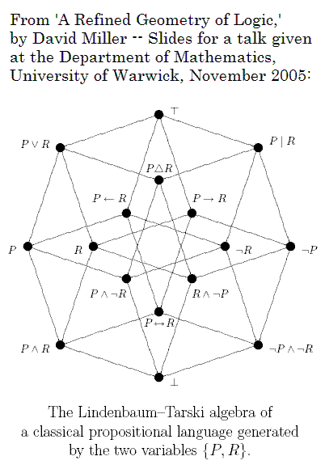
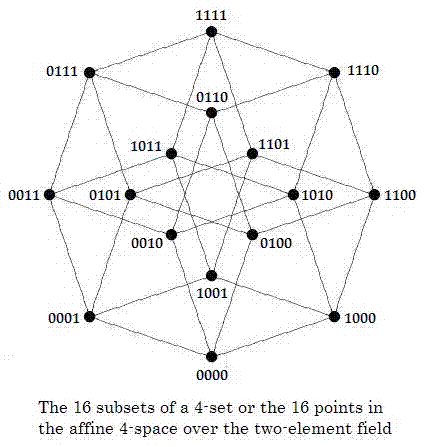
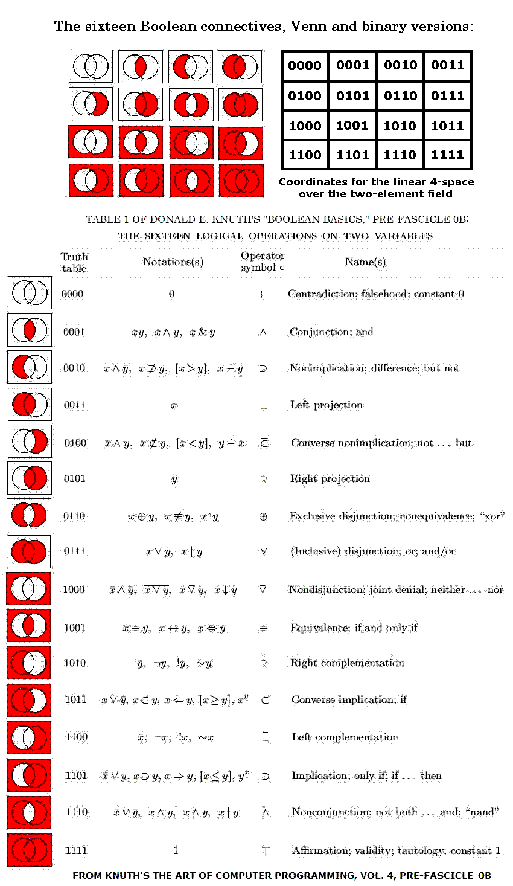

Abstract:
The phrase "algebra of logic"
is commonly used to describe the classic work of Boole and
others. The phrase "geometry of logic" is less common; this
note
supplies some background on what it might mean.
It is well known that the set of 16 connectives ("and," "or," etc.) of
two-variable Boolean logic and the set of
16 subsets of an four-element set (a 4-set) have
the same
structure-- a Boolean lattice. It is also
well known that the group of Boolean-lattice automorphisms, or
symmetries, of the 16 connectives is isomorphic to the group of 24
permutations of the 4-set. Nevertheless, some
authors* have
proposed additional automorphisms of the 16 connectives, based on
symmetries of geometric figures (such as a Hasse diagram of
the
Boolean lattice) labeled by the connectives. Such proposed
automorphisms may be viewed in a
larger context-- that of the 322,560 automorphisms
of the four-dimensional affine space A over the
two-element
Galois field GF(2).
The phrase "geometry of
logic" has been used by,
among others, David Miller of the department of philosophy at the
University of
Warwick. The following is from a talk by Miller:

Figure 1
Miller's "geometry of logic" is based on a pseudometric
space. This note discusses a "geometry of logic"
that
differs from Miller's but is related to one of Miller's
illustrations. Figure 1, Miller's picture of a Hasse diagram
of a
Boolean lattice,
may
also be viewed as
a tesseract (4-dimensional hypercube) whose vertices represent the 16
traditional "binary connectives" (logical operations on two variables)
of basic logic. The tesseract's 16 vertices may also, as in
Figure 2,
below, be regarded as representing either the 16 subsets of a 4-set or
the 16 elements of the affine
4-space
A over the two-element Galois field GF(2).

Figure 2
The binary-connective labels in Figure 1 above correspond to the
digital labels in Figure 2 above. Thus the binary-connective
labels and the
digital labels provide different ways of looking at the same abstract
structure, which can itself be interpreted either as a Hasse diagram of
a Boolean lattice or as a tesseract.
If interpreted as a Boolean-lattice diagram, this abstract structure
has a group
of automorphisms (one-to-one self-mappings preserving the partial
ordering) of order 24, corresponding to the group of all
permutations of an underlying 4-set.
If interpreted as a tesseract, the abstract structure has a group
of automorphisms (one-to-one self-mappings preserving adjacency) of
order 384.
The tesseract interpretation suggests a "geometry of logic" different
from Miller's-- the geometry of the 4x4 square. Such a square, if
interpreted as an adjacency structure (on a torus, i.e., with each cell
on an edge of the array adjacent to the corresponding cell on the
opposite edge), also has a group of 384 automorphisms-- essentially the
same as those of the tesseract, since
there is an adjacency-preserving isomophism of the tesseract's 16
vertices with the array's 16 unit cells. (See this site's
discussion
of a 1937 problem of R.
D. Carmichael.)
As we applied labels to the tesseract, we can also apply labels to the
4x4 square. The 16 binary-connective labels of
Figure 1-- redrawn as Venn diagrams-- and the 16 digital labels of
Figure 2 can be applied to the 16
unit cells of a 4x4 square as in Figure 3 below.
The 4x4 array, can, like the
tesseract, be viewed in various ways. If interpreted as a
rigid
geometric figure, the array has as automorphisms the group of 8
symmetries of the square. If interpreted as an adjacency
structure, the array has, as noted above, a group of 384
automorphisms. If we do not require that an automorphism (or
symmetry) of the
array
preserve adjacency of unit cells, the array may be viewed as having a
much larger group of symmetries: 322,560. This is the order
of
the full
affine group acting on the 16 digital labels, when these labels are
regarded as names of the 16 points of the affine 4-space
A
over
the two-element Galois field GF(2). (See "
Geometry
of the
4x4 Square.")
For a purely geometric way to generate the affine group, without any
reference to the digital labels (i.e., coordinates), see
the
kaleidoscope puzzle.
This affine group includes the previously mentioned groups of orders 8,
24, and 384 as subgroups.
Figure 3 below allows us to compare some authors' suggestions* for
interesting permutations of the 16 binary connectives (here represented
by Venn diagrams) with permutations acting, as in "
Geometry
of the
4x4 Square," on the 16 affine 4-space points (here
represented by
digital labels). A table by Donald E. Knuth is used to
translate
the Venn diagrams into the standard non-digital notations for the
connectives.

Figure 3
To recapitulate-- as noted previously, in Figure 2 viewed as a
lattice-diagram the 16 digital labels 0000, 0001, etc., may be
interpreted as naming the 16 subsets of a 4-set; in this case the
partial ordering in the lattice is the
structure preserved by the lattice's group of 24 automorphisms-- the
same
automorphism group as that of the 16 Boolean connectives.
If,
however,
the 16 digital labels are interpreted as naming the 16 functions from
a 4-set to a 2-set (of two truth values, of two colors, of
two
finite-field elements, and so forth), it is not obvious that the notion
of partial order is relevant. For such a set of 16 functions,
the
relevant group of automorphisms may be the affine group of
A
mentioned above. One might argue that each Venn diagram in
Figure
3
constitutes such a function-- specifically, a mapping of four
nonoverlapping regions
within a rectangle to a set of two colors-- and that the diagrams,
considered simply as a set of two-color mappings, have an automorphism
group of order larger than 24... in fact, of order 322,560.
Whether
such a group can be regarded as forming part of a "geometry of
logic" is open to debate.
Miller's talk refers to his earlier construction of a geometric space
whose points are the propositions of a theory:
In ‘A Geometry of Logic’ (1984)...
I set out to be utterly literal, and to show how
single propositions (but not theories) may be
regarded as points in a metric or pseudometric
space. I presented three rather dissimilar
axiomatizations (one new, two well known) of
a pseudometrical theory of distance in Boolean
algebra, which is the canonical algebraic
representation of classical propositional logic.
As the above figures suggest, a rather different "utterly literal"
approach might involve, not a metric or pseudometric space, but instead
the finite geometry A.
In summary, geometrically-defined permutations acting on the
16
Boolean
connectives have seemed, to some,* a
nontrivial topic for study. The 4x4 space A
provides a new** setting for such investigations, a setting that
accommodates many more automorphisms than have previously been
considered in what has been called "the geometry of logic."
* That mathematically unlearned authors such as Jean Piaget
(see
Jean-Blaise Grize's discussion of Piaget, "Operatory Logic," pp. 77-86
in Inhelder, De Caprona, and Cornu-Wells (eds.), Piaget Today,
Psychology Press (UK), 1987) and Shea Zellweger (see his "Untapped
Potential in Peirce's Iconic Notation for the Sixteen Binary
Connectives", pp. 334–386 in Houser, Roberts, Van Evra (eds.), Studies
in the Logic of Charles Sanders Peirce,
Indiana University Press, Bloomington, IN, 1997) have discussed
variants of the
geometric-figure approach to Boolean automorphisms does not necessarily
mean that it is unworthy of attention. For an approach more
sophisticated than those of Piaget and Zellweger, see, for instance,
Achille C. Varzi's "The
Geometry of Negation" (with Massimo Warglien), Journal
of
Applied Non-Classical Logics, 13 (2003), 9-19.
(Thanks to an
anonymous Usenet author for this reference.)
|
Further details:
A search for references to Zellweger leads to a detailed
description of a group of 16 "logical automorphisms" of the
16 binary connectives in the paper
"Simetria y Logica: La notacion de Peirce para los 16 conectivos
binarios," by Mireya
Garcia, Jhon Fredy Gomez, and Arnold Oostra. (Published in the Memorias
del XII Encuentro de Geometria y sus Aplicaciones,
Universidad Pedagogica Nacional, Bogota, June 2001; on the Web at http://www.unav.es/gep/Articulos/SimetriaYLogica.pdf.)
The authors do not identify this group as isomorphic to a subgroup of
the affine group of A;
this can serve as an exercise. The Oostra paper also suggests
an
introductory exercise for those unfamiliar with Boolean lattices:
determine whether the
authors' order-16 group includes all
transformations that might
reasonably
be called "logical automorphisms" of the 16 binary connectives.
|
** Update of Sept. 12, 2007: There may be some question about the word
"new" here. See, for
instance, "
Logic
as a Vector System," by
Jonathan Westphal and Jim
Hardy,
Journal of Logic and Computation
2005 15(5): 751-765. Westphal and Hardy said that "no
one has, so far as we know, proposed modelling propositions as
vectors while retaining classical logic." They discussed a system of
arrow diagrams, superficially resembling vectors in a Euclidean
space, that can be used to illustrate propositional logic. In contrast,
the above affine space
A over GF(2) is naturally
associated
(like any affine space) with a true vector space-- namely, the space of
its translations. The 16 points of
A may be
regarded as
elements of either the affine space or the vector space, depending on
what sort of transformations they are to undergo.
Update of Sept. 27, 2007: The above association of the affine
4-space A with the 16 Boolean connectives is not
new. See, for
instance, Carol
von der Lin on Projective
Structures (unsigned, undated, web page, parts of which are from
Nov. 2003 or before). The resulting association of
the
Boolean connectives with group actions on the 4x4 square may, however,
be new.
For a much more sophisticated approach to geometry and logic,
see Steven
Vickers on geometric
logic.
Author: Steven H.
Cullinane
Page created March 10, 2007. Last modified September 27, 2007.